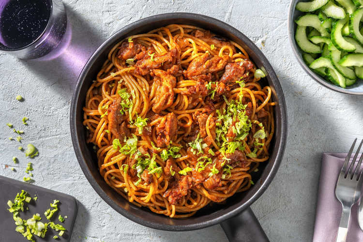

Surinaamse bami
Deze zelfgemaakte bami geef je een Surinaamse twist. Wist je dat ze daar vaak spaghetti voor gebruiken in plaats van mie?

Ingrediënten
4 personen
- 2 ui
- 4 tenen knoflook
- 4 cm gember
- 2 komkommer
- 360 gram spaghetti
- 5 gram laos
- 600 gram kipdijreepjes met kruiden
- 3 eetlepels tomatenpuree
- 40 ml sojasaus
- 20 gram bladselderij
- 2 el ketjap manis
- 2 el zonnebloemolie
- 1/2 blokje runderboullion
- 4 el witte wijnazijn
- 2 el suiker
- peper en zout
Bereiden
- Breng ruim water met een flinke snuf zout aan de kook in een pan met deksel voor de spaghetti. Snipper de ui. Pers de knoflook of snijd fijn. Rasp de gember fijn. Halveer de komkommer in de lengte. Verwijder met een theelepel de zaadlijsten en snijd beide helften van de komkommer in dunne plakken.
- Maak in een saladekom een zoetzure dressing van per persoon: 1 el wittewijnazijn en 1/2 el suiker. Meng de komkommer met de zoetzure dressing. Schep goed om. Kook de spaghetti, afgedekt, 10 - 12 minuten in de pan met deksel. Giet daarna af, maar bewaar wat van het kookvocht. Verhit 1/2 el zonnebloemolie per persoon in een wok op middelhoog vuur. Bak de knoflook, ui, gember en gedroogde laos 2 - 3 minuten aan.
- Voeg de kippendijreepjes toe aan de wok en bak nog 4 - 6 minuten. Voeg de tomatenpuree en de sojasaus toe aan de wok met kippendijreepjes. Voeg vervolgens ook per persoon: 1/2 el ketjap en 1/8 bouillonblokje toe. Bak het geheel al roerend nog 1 minuut in de wok. Voeg tot slot ook de gekookte spaghetti toe en meng alles goed door elkaar. Voeg eventueel wat van het bewaarde kookvocht toe als de bami te droog lijkt.
- Snijd het verse selderijblad fijn. Verdeel de bami over de borden en garneer met de selderij. Serveer de zoetzure komkommersalade erbij.